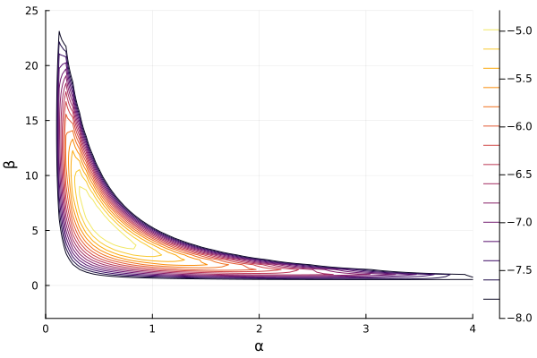
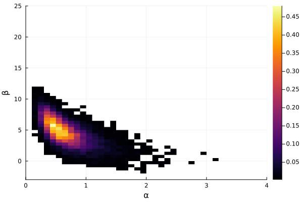
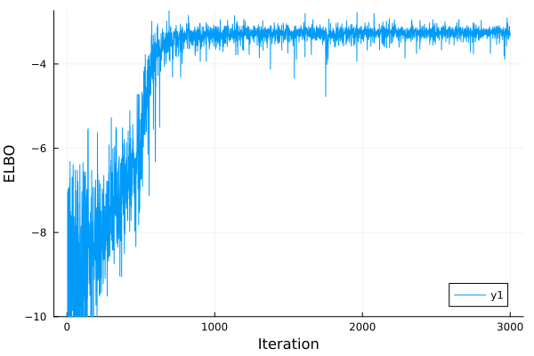
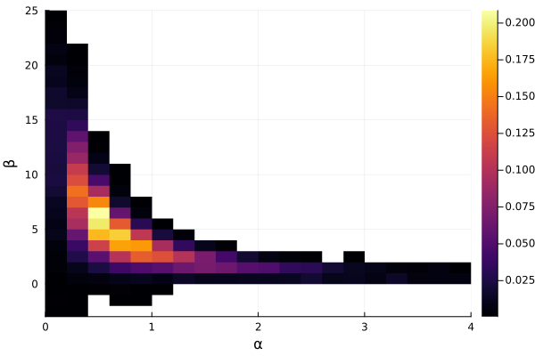

Normalizing Flows
In this example, we will see how to use NormalizingFlows with AdvancedVI.
Problem Setup
For the problem, we will look into a toy problem where NormalizingFlows can be benficial. For a dataset of real valued data $y_1, \ldots, y_n$, consider the following generative model:
\[\begin{aligned} \alpha &\sim \text{LogNormal}(0, 1) \\ \beta &\sim \text{Normal}\left(0, 10\right) \\ y_i &\sim \text{Normal}\left(\alpha \beta, 1\right) \end{aligned}\]
Notice that the mean is predicted as the product $\alpha \beta$ of two unknown parameters. This results in multiplicative unidentifiability of $\alpha$ and $\beta$. As such, the posterior exhibits a "banana"-shaped degeneracy. Multiplicative degeneracy is not entirely made up and do come up in some models used in practice. For example, in the 3-parameter (3-PL) item-response theory model and the N-mixture model used for estimating animal population.
using Bijectors: Bijectors
using Distributions
using LogDensityProblems: LogDensityProblems
struct MultDegen{Y}
y::Y
end
function LogDensityProblems.logdensity(model::MultDegen, θ)
α, β = θ[1], θ[2]
logprior_α = logpdf(LogNormal(0, 1), α)
logprior_β = logpdf(Normal(0, 10), β)
loglike_y = mapreduce(+, model.y) do yi
logpdf(Normal(α * β, 1.0), yi)
end
return logprior_α + logprior_β + loglike_y
end
function LogDensityProblems.dimension(model::MultDegen)
return 2
end
function LogDensityProblems.capabilities(::Type{<:MultDegen})
return LogDensityProblems.LogDensityOrder{0}()
end
nothingDegenerate posteriors often indicate that there is not enough data to pin-point the right set of parameters. Therefore, for the purpose of illustration, we will use a single data point:
model = MultDegen([3.0])
nothingThe banana-shaped degeneracy of the posterior can be readily visualized:
using Plots
contour(
range(0, 4; length=64),
range(-3, 25; length=64),
(x, y) -> LogDensityProblems.logdensity(model, [x, y]);
xlabel="α",
ylabel="β",
clims=(-8, Inf),
)
savefig("flow_example_posterior.svg")
nothing
Notice that the two ends of the "banana" run deep both horizontally and vertically. This sort of nonlinear correlation structure is difficult to model using only location-scale distributions.
Gaussian Variational Family
As usual, let's try to fit a multivariate Gaussian to this posterior.
using ADTypes: ADTypes
using ReverseDiff: ReverseDiff
using DifferentiationInterface: DifferentiationInterface
using LogDensityProblemsAD: LogDensityProblemsAD
model_ad = LogDensityProblemsAD.ADgradient(
ADTypes.AutoReverseDiff(; compile=true), model; x=[1.0, 1.0]
)
nothingSince $\alpha$ is constrained to the positive real half-space, we have to employ bijectors. For this, we use Bijectors:
using Bijectors: Bijectors
function Bijectors.bijector(model::MultDegen)
return Bijectors.Stacked(
Bijectors.bijector.([LogNormal(0, 1), Normal(0, 10)]), [1:1, 2:2]
)
end
nothingFor the algorithm, we will use the KLMinRepGradProxDescent objective.
using AdvancedVI
using LinearAlgebra
d = LogDensityProblems.dimension(model_ad)
q = FullRankGaussian(zeros(d), LowerTriangular(Matrix{Float64}(I, d, d)))
binv = Bijectors.inverse(Bijectors.bijector(model))
q_trans = Bijectors.TransformedDistribution(q, binv)
max_iter = 3*10^3
alg = KLMinRepGradProxDescent(ADTypes.AutoReverseDiff(; compile=true))
q_out, info, _ = AdvancedVI.optimize(alg, max_iter, model_ad, q_trans; show_progress=false)
nothingThe resulting variational posterior can be visualized as follows:
samples = rand(q_out, 10000)
histogram2d(
samples[1, :],
samples[2, :];
normalize=:pdf,
nbins=32,
xlabel="α",
ylabel="β",
xlims=(0, 4),
ylims=(-3, 25),
)
savefig("flow_example_locationscale.svg")
nothing
We can see that the mode is closely matched, but the tails don't go as deep as the true posterior. For this, we will need a more "expressive" variational family that is capable of representing nonlinear correlations.
Normalizing Flow Variational Family
Now, let's try to optimize over a variational family formed by normalizing flows. Normalizing flows, or flows for short, is a class of parametric models leveraging neural networks for density estimation. (For a detailed tutorial on flows, refer to the review by Papamakarios et al.[PNRML2021]) Within the Julia ecosystem, the package NormalizingFlows provides a collection of popular flow models. In this example, we will use the popular RealNVP[DSB2017]. We will use a standard Gaussian base distribution with three layers, each with 16 hidden units.
using NormalizingFlows
using Functors
@leaf MvNormal
n_layers = 3
hidden_dims = [16, 16]
q_flow = realnvp(MvNormal(zeros(d), I), hidden_dims, n_layers; paramtype=Float64)
nothingRecall that out posterior is constrained. In most cases, flows assume an unconstrained support. Therefore, just as with the Gaussian variational family, we can incorporate Bijectors to match the supports:
q_flow_trans = Bijectors.TransformedDistribution(q_flow, binv)
nothingFor the variational inference algorithms, we will similarly minimize the KL divergence with stochastic gradient descent as originally proposed by Rezende and Mohamed[RM2015]. For this, however, we need to be mindful of the requirements of the variational algorithm. The default entropy gradient estimator of KLMinRepGradDescent is ClosedFormEntropy(), which assumes that the entropy of the variational family entropy(q) is available. For flows, the entropy is (usually) not available. Instead, we can use any gradient estimator that only relies on the log-density of the variational family logpdf(q), StickingTheLandingEntropy() or MonteCarloEntropy(). Here, we will use StickingTheLandingEntropy()[RWD2017]. When the variational family is "expressive," this gradient estimator has a variance reduction effect, resulting in faster convergence[ASD2020]. Furthermore, Agrawal et al.[AD2025] claim that using a larger number of Monte Carlo samples n_samples is beneficial.
alg_flow = KLMinRepGradDescent(
ADTypes.AutoReverseDiff(; compile=true);
n_samples=8,
operator=IdentityOperator(),
entropy=StickingTheLandingEntropy(),
)
nothingWithout further due, let's now run VI:
q_flow_out, info_flow, _ = AdvancedVI.optimize(
alg_flow, max_iter, model_ad, q_flow_trans; show_progress=false
)
nothingWe can do a quick visual diagnostic of whether the optimization went smoothly:
plot([i.elbo for i in info_flow]; xlabel="Iteration", ylabel="ELBO", ylims=(-10, Inf))
savefig("flow_example_flow_elbo.svg")
nothing
Finally, let's visualize the variational posterior:
samples = rand(q_flow_out, 10000)
histogram2d(
samples[1, :],
samples[2, :];
normalize=:pdf,
nbins=64,
xlabel="α",
ylabel="β",
xlims=(0, 4),
ylims=(-3, 25),
)
savefig("flow_example_flow.svg")
nothing
Compared to the Gaussian approximation, we can see that the tails go much deeper into vertical direction. This shows that, for this example with extreme nonlinear correlations, normalizing flows enable more accurate approximation.
- PNRML2021Papamakarios, G., Nalisnick, E., Rezende, D. J., Mohamed, S., & Lakshminarayanan, B. (2021). Normalizing flows for probabilistic modeling and inference. Journal of Machine Learning Research, 22(57), 1-64.
- DSB2017Dinh, L., Sohl-Dickstein, J., & Bengio, S. (2016). Density estimation using real nvp. In Proceedings of the International Conference on Learning Representations.
- RM2015Rezende, D., & Mohamed, S. (2015, June). Variational inference with normalizing flows. In Proceedings of the International conference on machine learning. PMLR.
- RWD2017Roeder, G., Wu, Y., & Duvenaud, D. K. (2017). Sticking the landing: Simple, lower-variance gradient estimators for variational inference. In Advances in Neural Information Processing Systems, 30.
- ASD2020Agrawal, A., Sheldon, D. R., & Domke, J. (2020). Advances in black-box VI: Normalizing flows, importance weighting, and optimization. In Advances in Neural Information Processing Systems, 33, 17358-17369.
- AD2025Agrawal, A., & Domke, J. (2024). Disentangling impact of capacity, objective, batchsize, estimators, and step-size on flow VI. In Proceedings of the International Conference on Artificial Intelligence and Statistics.